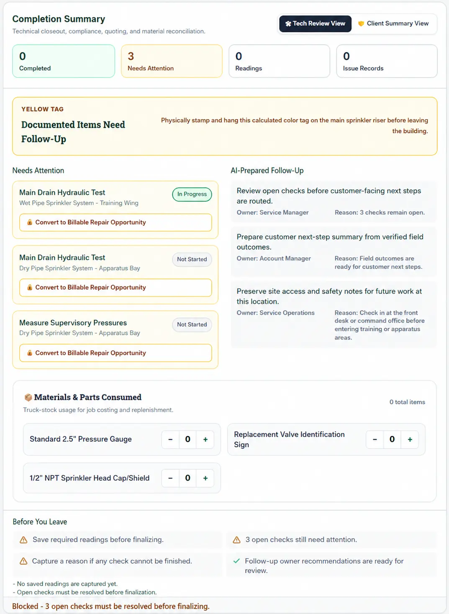

Fire Protection Field Assistant

Challenge
Field employees may need customer history, site details, previous work, inspection requirements, manuals, and internal resources before and during a job. That information can be difficult to find when they need it.
What we built
One mobile workspace that supports the job from preparation through field work and completion.
- Customer, site, and previous-job information
- Required checks and current field work
- Readings, notes, photos, and issues
- Reference materials, AI support, and follow-up work
Why it matters
Field teams can spend less time searching for information and keep preparation, work performed, documentation, and follow-up connected.

